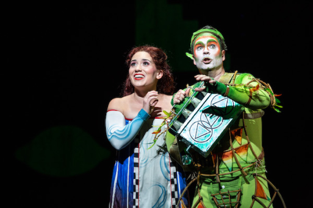

Background
From 2015-2021, I was a professional classical pianist and opera coach. A large part of my job was to learn operas & play them in rehearsals for opera companies; I would serve as the full orchestra, which would be incorporated at the end of rehearsals and in performances.
Learning an entire opera is demanding and time-consuming. Many are over 2 or 3 hours long, most are in a foreign language (which needs to be learned), and none were written for piano so many of them are extremely difficult to play. Moreover, given that opera has been around since the early 1600s, there are far more operas in the repertoire than would be possible for any one person to learn in an entire lifetime, much less in a few years as a student.
In this project, I explored a dataset of opera performances around the world between 2012-2018 to answer the questions that were top of mind when I was a pianist: what operas should I learn? Who are the most popular composers? What languages/countries produced the most operas? For some composers, would I be able to focus on just one of their pieces, or would I need to learn multiple from some composers? Essentially: what is the most efficient way for me to learn as much of the in-demand repertoire as possible, so I could be as hirable and effective as possible? I knew that some operas were more important and popular than others, but I wanted to quantify that popularity.
Dataset/Cleaning
This dataset was a comprehensive list of opera performances. The original was found on Kaggle, at this link.
To clean the dataset and ensure its accuracy, I took the following steps:
- Removed columns that were unnecessary for my analysis, including season, production, type, and start date
- Cleaned the composer nationality column by looking up all composers that had null values
-
Carefully checked the composers and piece titles for entries that
didn't belong
- For example, I saw several oratorios on the list by composers such as Bach, Beethoven, and Handel. Oratorio is a similar genre to opera, but distinct enough that I felt they should be removed.
- It's highly possible that some non-operas still slipped through the cracks; however, these would only be pieces that received a few performances total and would not materially affect the conclusions.
- Converted ISO country codes to country names, for better readability on composer nationality and performance country columns.
Dataset Caveats
The main caveat of this dataset is that it only includes up to 2018. Normally this lack of immediate recency wouldn't be relevant; however, the COVID pandemic and social justice conversations in the wake of George Floyd protests have had a resounding impact on the classical music and opera worlds, as everywhere else. I would be interested to see a dataset in a few years from now incorporating these changes to determine any tangible impact on the composers being performed and stories being told in opera.
Another important caveat to keep in mind is that many smaller opera companies, particularly in the United States, would likely be left out of a dataset such as this. It would be very difficult to keep an accurate count of every single operatic performance, especially ones that only have a small audience of dozens. At least in the US, a lot of the most innovative programming of newer and lesser-known composers happens at these small grassroots companies, which wouldn't be reflected in this dataset.
Finally, this dataset of course only has data on operas that have been performed, not that have been written but never performed in this date range. Most pieces by famous composers receive at least a performance or two somewhere in the world, but there's a possibility that not all written works are represented here.
Analysis Tools/Methods
For this project, I used Excel/Google Sheets to clean the dataset and store the results of the queries, SQL to analyze the data and Tableau for visualization.
Links to all relevant items:
Conclusions
Opera composition is a winner-take-all field.
The main takeaway is that opera performances are dominated to an extreme degree by power laws. This means that performances are very unevenly distributed: although there are thousands of pieces in existence, a much, much smaller number gets performed with any regularity. The same is true for composers; there are many of them, but a small number dominate the field.
The Pareto Principle states that 80% of outcomes come from 20% of causes, but opera is actually even more extreme in this regard. For example:
- The top 8 composers (out of 1,411) make up 52% of total performances.
- 80% of performances come from 3% of composers. Graph
- The top 38 operas (out of 2,863 in this dataset) make up 50% of total performances.
- 80% of performances come from 7.9% of operas. Graph
Though a lot of composer nationalities were represented (69 total), the top 4 (all European) represent 76% of all performances. Graph
The outputs of many individual composers also follow a power law- for example, Mozart wrote 21 operas, but 90% of his performances came from his top 5. Graph
These statistics may not be good news for the health of the opera industry as a whole, but they do provide some pretty clear takeaways for someone who was in my position:
- Prioritize the popular works of Verdi, Mozart, and Puccini.
-
Learn extremely popular operas not by the above three composers:
- Carmen by Bizet
- Il barbiere di Siviglia by Rossini
- Die Fledermaus by Johann Strauss
-
Learn the top-performed opera by the most popular composers not
already listed:
- L'elisir d'amore by Donizetti
- Der fliegende Hollander by Wagner
- Eugene Onegin by Tchaikovsky
- In terms of language learning: prioritize Italian above all else, followed by German, followed by French.
Most composers maintain similar styles throughout their careers, so by focusing on these few operas by these composers, one could cover an extremely high percentage of all the composers/works that one would be expected to know.
To get good at writing operas, you need to write a lot of them.
Opera is a difficult medium for composition. A composer has to consider the plot, character development, lyrics, melody, orchestration, and on and on. Given the demands, it's perhaps not surprising that most composers don't write a hit opera on their first try. The most popular opera by a composer who wrote only one is Beethoven's Fidelio, with 748 performances. It's the 36th-most-popular (and Beethoven re-wrote it so many times over the course of many years that it almost can't count as the first try).
Some more statistics to put this in perspective:
- Verdi, Mozart, and Puccini, the most-performed composers, wrote, respectively, 28, 21, and 13 operas.
- All composers with over 1,000 performances overall wrote at least 3 operas.
- For the top 10 composers, the mean number of operas written was 19. Only Bizet (4) and Tchaikovsky (8) were in single digits.
The caveat that this dataset doesn't include all written works, only performed works, strengthens this argument. Some composers may have written even more pieces, but they are so forgotten that they received 0 performances in this period. Graph
The gender distribution of performances is extreme.
Opera composition has been a male-dominated field for a long time, for both complex and not-so-complex reasons. But that historical disparity is still relevant in contemporary performances of opera- out of 140,537 performances, only 1,093, or 0.78%, were for pieces composed by women. Graph
Some more worrying numbers:
- There are 146 male composers who received more performances than the most-performed female composer, Kaija Saariaho. Graph
-
There are 317 works by male composers that received more performances
than the most-performed opera by a female composer.
- This opera, Der satanarchaolugenialkohollische Wunschpunsch by Elisabeth Naske, was written specifically for children, putting it arguably in a different category than most operas on this list. There are 387 operas by male composers with more performances than the most-performed work by a woman that wasn't written for children: As One by Laura Kaminsky. Graph
This would be one of the most interesting trends to observe in recent years, post-2020. Programming more pieces by members of under-represented groups in opera has been a major point of discussion in recent years, more so than it was in the mid-2010s.